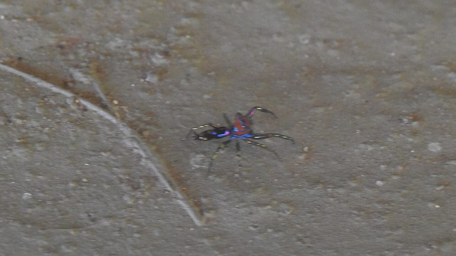

दक्षिण एशियाई मोर जंपिंग स्पाइडरSouth Asian Peacock Jumping Spider
Chrysilla volupe · Salticidae · SPD-0041

- Scientific name वैज्ञानिक नाम
- Chrysilla volupe (Karsch, 1879)
- Family कुल
- Salticidae
- Hindi हिंदी
- दक्षिण एशियाई मोर जंपिंग स्पाइडर
- Local names स्थानीय नाम
- peacock jumping spider, chrysilla volupe, mor makdi, rangeen koodne wali makdi
- Status here यहाँ की स्थिति
- native
- Movement आवागमन
- Resident, here all year
- Known from कहाँ दर्ज
- Others have published records from the wider Awadh–Purvanchal plain, none yet from Basti–Ayodhya अवध–पूर्वांचल से दूसरों के प्रकाशित अभिलेख, बस्ती–अयोध्या से अभी नहीं
- IUCN IUCN
- not evaluated
- Review समीक्षा
- not yet reviewed
When to look कब देखें
Present all year. साल भर मौजूद।
Uses and possibilities उपयोग और संभावनाएँ
Drawn from the documented uses in the profile below, where each is labelled traditional, current or a research lead. All uses →
Tell it apart from इनसे अलग पहचानें
दक्षिण एशियाई मोर जंपिंग स्पाइडर / South Asian Peacock Jumping Spider
Chrysilla volupe (Karsch, 1879) — Salticidae
दक्षिण एशियाई मोर जंपिंग स्पाइडर — बागों, बगीचों, आम के पेड़ों और धूप वाले पत्तों पर पाई जाने वाली भारतीय उपमहाद्वीप की सबसे रंगीन, भव्य और चमकीली कूदने वाली देशी मकड़ी है। इसके नर का रूप-रंग किसी मोर जैसा मनमोहक होता है। इसका सिर चटख नारंगी-लाल रंग का होता है जिस पर नीली और फिरोजी रंग की धातु जैसी चमकदार धारियां होती हैं। इसके पेट पर बैंगनी, सुनहरी और नीली पट्टियां होती हैं जो धूप में इंद्रधनुष की तरह चमकती हैं। मादा हल्के पीले-भूरे रंग की होती है और पत्तों में आसानी से छिप जाती है। यह शिकार पकड़ने के लिए कोई जाला नहीं बनाती, बल्कि पत्तों पर तेजी से दौड़ती है और अपनी बड़ी आंखों से देखकर छोटे कीड़ों पर झपटती है। यह पूरी तरह से विषहीन और मित्र कीट है।
Quick Identification त्वरित पहचान
| Feature | Description |
|---|---|
| Female Size | Body length up to 5 mm (Caleb et al. 2018) |
| Male Size | Body length up to 4 mm (Caleb et al. 2018) |
| Male Coloration | Cephalothorax fiery orange-red with iridescent electric-blue and turquoise stripes (Karsch 1879) |
| Male Abdomen | Adorned with metallic purple, blue, red, and golden transverse/longitudinal bands (Caleb et al. 2018) |
| Female Coloration | Cryptic golden-brown with pale yellowish lateral borders and dark mottling (Caleb et al. 2018) |
| Eyes | Large anterior median eyes set into a bright orange-red ocular mask (Karsch 1879) |
| Hunting Style | Highly agile visual stalk-and-pounce foliage hunter without a capture web |
Field tip: Look on sunlit leaves of garden shrubs and mango trees. A tiny, jewel-like jumping spider whose male displays a dazzling fiery orange-red head with electric-blue stripes and a rainbow-banded abdomen is Chrysilla volupe.
हिंदी: नर मकड़ी का सिर चमकीला नारंगी-लाल होता है जिस पर नीली धारियां होती हैं और पेट पर इंद्रधनुषी पट्टियां होती हैं। मादा भूरे-पीले रंग की होती है। यह धूप में पत्तों पर फुदकती हुई शिकार करती है।
Morphology आकारिकी
Measurements as given in the handbooks and recent taxonomic revisions (Karsch 1879; Caleb et al. 2018; Sebastian & Peter 2009):
| Measurement | Value | Source |
|---|---|---|
| Female body length | up to 5 mm | Caleb et al. (2018) |
| Male body length | up to 4 mm | Caleb et al. (2018) |
| Carapace shape | Elongate-oval, moderately elevated anteriorly | Karsch (1879) |
| Eye arrangement | Four pairs in three rows (4-2-2) | Sebastian & Peter (2009) |
The male cephalothorax is longer than broad, moderately high, and gently sloping posteriorly (Karsch 1879). The ocular area and dorsal carapace are covered with vivid fiery orange-red or crimson scales. Three striking longitudinal bands of iridescent structural scales — one central and two lateral — shimmer with intense turquoise-blue and emerald-green under direct illumination (Caleb et al. 2018). The anterior median eyes are large, lustrous, and forward-pointing. The chelicerae are vertical and orange-brown. The abdomen is slender, elongate-oval, and decorated with a dazzling array of metallic scales arranged in transverse and longitudinal bands of deep blue, magenta, purple, and gold. The legs are slender, pale yellow with dark longitudinal striping on the anterior pairs (Sebastian & Peter 2009).
Females are markedly different: lacking the intense fiery reds and blues, they are clothed in soft tawny-yellow, golden-brown, and white setae, forming a cryptic pattern that blends seamlessly against plant foliage (Caleb et al. 2018). The epigyne presents two circular spermathecae connected by short copulatory ducts.
हिंदी: नर का शरीर बेहद रंगीन होता है। सिर पर लाल-नारंगी रोएं और फिरोजी नीली धारियां होती हैं। पेट पर नीले, बैंगनी और सुनहरे तराशे होते हैं जो धूप में चमकते हैं। आंखें बड़ी और दूरबीन जैसी होती हैं। मादा का रंग सादा और भूरा-पीला होता है ताकि वह पत्तों में सुरक्षित रह सके।
Behaviour & Ecology व्यवहार और पारिस्थितिकी
The South Asian Peacock Jumping Spider is a strictly diurnal foliage dweller that occupies sunny microhabitats within fruit orchards, garden shrubbery, and hedgerows. It displays a strong preference for warm, sunlit leaves where its iridescent structural coloration is fully illuminated.
It moves with rapid, jerky running bursts punctuated by frequent pauses during which it turns to examine movement in its environment. The male uses his extraordinary coloration for visual courtship displays, raising his vibrantly colored abdomen, spreading his legs, and performing rhythmic swaying motions before females. Hunting is entirely cursorial and visual: Chrysilla volupe stalks small insects across leaf surfaces, anchors a silk dragline, and pounces with great agility. At night and during stormy weather, it rests inside a small, transparent silk retreat spun between touching leaves or inside a leaf fold.
हिंदी: यह मकड़ी दिन में धूप वाले पत्तों पर सक्रिय रहती है। नर अपने सुंदर रंगों का उपयोग मादा को रिझाने के लिए करता है। वह अपने रंगीन पेट को उठाकर खास अंदाज में नाचता है। शिकार दिखाई देने पर यह बिल्ली की तरह दबे पांव आगे बढ़ती है और अचानक छलांग लगाकर कीड़े को पकड़ लेती है।
Life Cycle / Phenology जीवन चक्र
Seasonal phenology in northern Indian plains across the agricultural year:
| Season / Month | Stage | Field Observation |
|---|---|---|
| March–May (Summer / Zaid) | Active foraging | Sub-adults and adults hunt on flowering garden shrubs and mango foliage |
| June–July (Monsoon onset) | Courtship & mating | Males perform peacock-like abdominal waving dances before females |
| August–September (Kharif peak) | Egg sac construction | Females spin delicate white silk sacs within curled leaves to guard eggs |
| October–November (Post-monsoon) | Spiderling dispersal | Emerged spiderlings disperse actively across surrounding foliage |
| December–February (Rabi winter) | Winter dormancy | Adults and sub-adults shelter in tight silken cells during cold winter weeks |
Reproduction occurs primarily during the warm, humid monsoon season. Courtship is exceptionally intricate: the male raises his iridescent abdomen almost vertically, displaying his metallic blue and red bands while waving his pedipalps and performing lateral stepping dances to signal to the female. Once mating is accomplished, the female constructs a small, flat cocoon of fine white silk in a sheltered leaf fold, laying a cluster of tiny pale eggs. She stays with the clutch, guarding the brood against predatory ants until the spiderlings hatch after several days and disperse following their initial molt.
हिंदी: बरसात के दिनों में इनका प्रजनन होता है। नर अपने रंगीन पेट को मोर की तरह ऊपर उठाकर मादा के सामने आकर्षक नृत्य करता है। मादा मुड़े हुए पत्ते में रेशम का घोंसला बनाकर अंडे देती है और उनकी रखवाली करती है। कुछ ही दिनों में अंडों से नन्हें बच्चे बाहर आ जाते हैं।
Diet and Feeding Behaviour आहार
Chrysilla volupe is an active diurnal predator preying on small, soft-bodied foliage-associated insects:
Natural prey items:
- Dipteran flies, including midges, small fruit flies, and mosquitoes.
- Sap-sucking bugs, including aphids, whiteflies, and small leafhoppers.
- Minute thrips and tiny beetles infesting leaves and flowers.
- Small caterpillars and newly hatched insect nymphs.
हिंदी: यह पूरी तरह मांसाहारी मकड़ी है। यह पौधों के पत्तों पर रहने वाले छोटे कीड़ों, मक्खियों, मच्छरों, माहू (एफिड्स), सफेद मक्खियों और नन्हीं इल्लियों का शिकार करती है।
Predators / Natural Enemies शत्रु
Documented natural predators in northern Indian orchard and garden environments:
- Small insectivorous birds: Visual hunters like Oriental Magpie-Robin, Black Drongo, and Common Myna capture jumping spiders from leaves.
- Spider wasps: Hunting wasps like Mud Dauber Wasp that hunt foliage spiders to provision mud nest cells.
- Predatory arthropods: Foliage-hunting mantids, assassin bugs, and larger jumping spiders like Thyene imperialis.
- Small lizards: Arboreal garden lizards (Calotes versicolor) and geckos hunting along garden vegetation.
हिंदी: दहियर, कोतवाल, मैना, मड डॉबर वास्प (कुम्हारी ततैया), शिकारी कीड़े और गिरगिट इस सुंदर मकड़ी के प्रमुख प्राकृतिक शत्रु हैं।
Agricultural / Human Relevance कृषि प्रासंगिकता
Beneficial natural predator: The South Asian Peacock Jumping Spider is a valuable natural enemy of micro-pests in fruit orchards (mango, guava, citrus) and vegetable gardens. By actively stalking across leaf blades and flower clusters, it naturally preys on aphids, thrips, and leafhoppers that damage crops, reducing pest pressure without chemical sprays.
Harmless and celebrated: Entirely non-venomous and incapable of biting humans, Chrysilla volupe is celebrated by naturalists and nature photographers as one of the most stunning examples of sexual selection and structural coloration in Indian wildlife.
Traditional: A rare and admired garden curiosity known among nature watchers as the peacock spider (mor makdi).
Today: Regarded as a flagship species for invertebrate conservation and micro-biodiversity in urban and rural green spaces.
Research direction (a lead, not a result): Investigating the structural mechanics of multilayer interference reflectors in the iridescent abdominal scales of Chrysilla volupe.
हिंदी: यह किसानों और बागवानों के लिए एक मित्र कीट है जो फसलों को नुकसान पहुंचाने वाले कीड़ों को खाती है। यह इंसानों के लिए पूरी तरह सुरक्षित और हानिरहित है और इसके अद्भुत रंगों के कारण इसे भारतीय वन्यजीवों का एक रत्न माना जाता है।
Expected Locally स्थानीय रूप से अपेक्षित
Not a field record. Written from published accounts for eastern Uttar Pradesh. No confirmed local sighting yet — if you have seen it, that is what the atlas needs.
अभी तक स्थानीय पुष्टि नहीं। यह विवरण प्रकाशित स्रोतों से है, किसी अवलोकन से नहीं।
The South Asian Peacock Jumping Spider is expected across eastern Uttar Pradesh in mature mango orchards, home gardens, groves, and flowering scrub borders. Look closely on sunny green leaves of broad-leaved shrubs and fruit trees from April through October. GBIF holds published records from the wider Awadh–Purvanchal plain, none yet from Basti–Ayodhya. A voucher photograph showing the fiery orange head, electric-blue stripes, and iridescent abdomen in males, submitted via the About page, would confirm the first local documentation for the project area.
Distribution वितरण
Global range: Native across South Asia, primarily recorded from India, Sri Lanka, Nepal, and Bhutan (World Spider Catalog 2025).
In India: Recorded from Kerala, Tamil Nadu, Karnataka, Maharashtra, Gujarat, West Bengal, and Uttar Pradesh (Caleb & Sankaran 2025).
In Uttar Pradesh: Documented from botanical gardens, university campuses, and rural orchard belts across the Gangetic plain.
In Basti district / eastern UP: Expected as a resident native species in orchard tracts and garden vegetation.
हिंदी: यह भारत, श्रीलंका और नेपाल में पाई जाती है। उत्तर प्रदेश में यह हरियाली वाले बागों और बगीचों में उपस्थित है।
Research Questions शोध प्रश्न
- What optical and structural mechanisms generate the angle-dependent iridescent colors on the abdomen of male Chrysilla volupe? / नर मकड़ी के पेट पर इंद्रधनुषी रंग किस प्रकार उत्पन्न होते हैं?
- What are the specific behavioral courtship sequences performed by males to signal female receptivity?
- What is the daily consumption rate of sap-sucking pests by Chrysilla volupe on orchard foliage? / बागों में यह मकड़ी प्रतिदिन कितने हानिकारक कीटों का शिकार करती है?
- How do high summer ambient temperatures influence courtship display activity on exposed leaves?
- What are the primary microhabitat preferences for overwintering retreats in north Indian agroecosystems?
Similar Species मिलती-जुलती प्रजातियाँ
| Species | Key Differences | |
|---|---|---|
| Chrysilla volupe (Peacock Jumping Spider) | Carapace brilliant orange-red with electric-blue stripes; abdomen banded in blue, purple, and red; up to 5 mm (Caleb et al. 2018) | |
| Phintella vittata ([[banded_phintella\ | Banded Phintella]]) | Body with metallic blue-green and golden-yellow longitudinal bands; lacks fiery red carapace (Sebastian & Peter 2009) |
| Thyene imperialis ([[imperial_jumping_spider\ | Imperial Jumping Spider]]) | Larger in size; male has coppery-orange head, white side stripes, and robust fringed front legs (Sebastian & Peter 2009) |
| Icius alboterminus ([[white_tipped_jumping_spider\ | White-tipped Jumping Spider]]) | Dark brown body with pale side stripes; distinct white setae on palp tips; lacks rainbow colors (Caleb & Sankaran 2025) |
Field rule: A tiny jumping spider whose male possesses a fiery orange-red head adorned with electric-blue stripes and an iridescent rainbow-banded abdomen, actively stalking sunny leaves without a web, is Chrysilla volupe.
हिंदी: बैंडेड फिनटेला पर नीली-हरी और पीली धारियां होती हैं, जबकि मोर जंपिंग स्पाइडर का सिर गहरा लाल-नारंगी होता है और पेट पर इंद्रधनुषी रंग होते हैं।
Taxonomy & Classification वर्गीकरण
Original description. Described by Ferdinand Karsch in 1879 as Phintella volupe in the Zeitschrift für die gesammten Naturwissenschaften, volume 52, pages 534–562. Type locality: Sri Lanka.
Subspecies. Monotypic — no subspecies are currently recognized across its range.
Family and order placement. Order Araneae, suborder Araneomorphae, family Salticidae, subfamily Salticinae, tribe Chrysillini. The genus Chrysilla Thorell, 1887, encompasses small, brightly colored jumping spiders closely allied to Phintella.
Phylogenetic notes. Long considered rare or lost to science, the species was rediscovered and its female described by Caleb et al. in 2018, confirming its placement in Chrysilla (World Spider Catalog 2025).
IUCN status rationale. Not evaluated (NE) on the global IUCN Red List of Threatened Species. It maintains widespread, viable populations across South Asian garden and woodland ecosystems.
हिंदी: इसका वैज्ञानिक नाम Chrysilla volupe है और यह Salticidae (कूदने वाली मकड़ियों) परिवार की सदस्य है।
Photo Gallery फोटो गैलरी
No photos yet — add field photos to media/species/south_asian_peacock_jumping_spider/ and run node scripts/sync_photos.js.
Photos needed आवश्यक फोटो
- [ ] Dorsal view of adult male showing fiery orange head and iridescent abdominal bands (नर के चमकीले लाल सिर और इंद्रधनुषी पेट की तस्वीर)
- [ ] Frontal close-up showing large primary eyes and blue facial stripes (बड़ी आंखों और नीली धारियों का क्लोज़-अप)
- [ ] Male performing courtship display on a leaf (पत्ते पर नृत्य करता हुआ नर)
- [ ] Cryptic female resting on foliage (पत्ते पर बैठी भूरे रंग की मादा)
References संदर्भ
- Karsch, F. (1879). Arachnologische Beiträge. Zeitschrift für die gesammten Naturwissenschaften, 52: 534–562.
- Caleb, J. T. D., Sanap, R. V., Patel, K. G. & Sudhikumar, A. V. (2018). First description of the female of Chrysilla volupe (Karsch, 1879) (Araneae: Salticidae: Chrysillini) from India. Arthropoda Selecta, 27(2): 143–153. doi:10.15298/arthsel.27.2.06
- Sebastian, P. A. & Peter, K. V. (2009). Spiders of India. Universities Press, Hyderabad, pp. 296–298.
- Caleb, J. T. D. & Sankaran, P. M. (2025). Araneae of India. Version 2025. Online checklist.
- World Spider Catalog (2025). World Spider Catalog, Version 26.0. Natural History Museum Bern.
- GBIF Occurrence Data — Chrysilla volupe, India (2025).
Source file: species/fauna/spiders/south_asian_peacock_jumping_spider.md